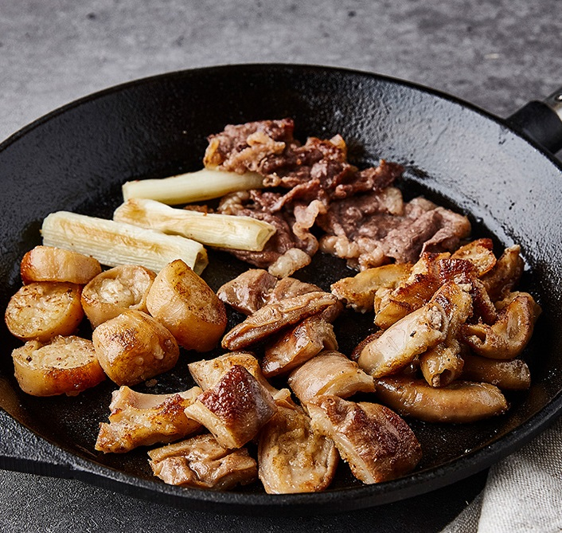

|  | ||
| This is samgyeopsal, grilled pork belly. It is delicious to eat onions, garlic, kimchi, mushrooms, and green onions baked in pork oil with lettuce or vegetables such as perilla leaves. |
This is Gobchang, Daechang, Makchang, beef intestines, It goes well with alcohol because it is very oily. |
This is Galbi, pork of beef rib usually coat it with the sauce |